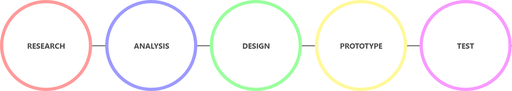
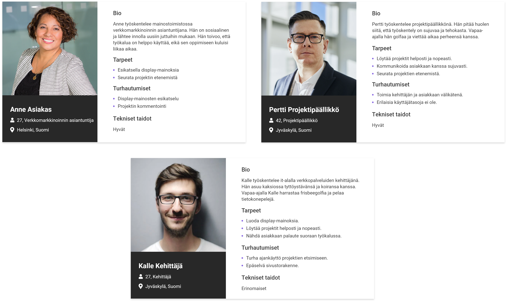
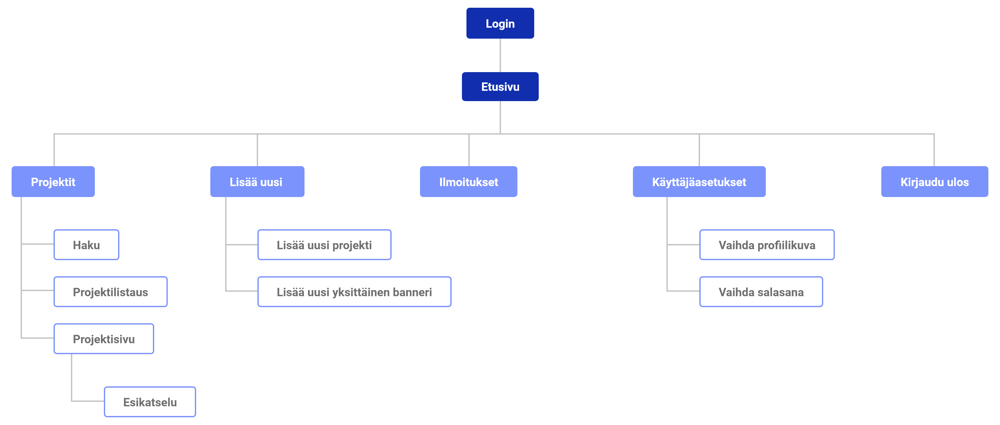

Display advertising has been implemented since the 20th century. As the industry evolves, new platforms and technologies are constantly emerging. Display advertising is one of the most effective ways to reach out to your target audience and increase brand visibility. Companies need the right kind of tools and plat forms to run display advertising projects to save time and money.
This project was part of my bachelor’s thesis. The task of the thesis was to redesign the interface of the client's display advertising management tool. The display advertising management tool manages display advertising projects and helps the communication between the customer and the company. After designing the new interface, the tool was implemented to a prototype and the prototype was tested by end users.
Into-Digital Oy
Spring 2021
I was responsible for the whole design process which included research, user stories, sketching, wireframing, visual design, prototyping and user testing.
Adobe XD, Google Forms, Maze
The design process was divided into five different stages.
The old management tool was neither as functional nor visually pleasing as it could be.
1. Improve site structure and navigation to make browsing easier and improve the overall experience
2. Create a more user-friendly and visual interface by improving navigation and site features
3. Add a comment section to fasten the communication between the customer and the company
The project began with user research and getting to know the subject. It was necessary to find out what a display advertising management tool is, who uses it, and why it is necessary. The company’s needs and goals were clarified by interviewing end users.
Based on the background research, it was possible to create user personas. There were three user groups in this project: customer, project manager and developer.
One user story was written for each user group. Writing user stories helped to narrow down ideas and focus on the needs of the user.
The structure of the site was designed based on the old version, but minor changes were made. A comment field was added to the preview, where the customer and the company can discuss issues related to the project. In user settings, the user can edit user-related issues, such as changing the password. The overall structure of the site was improved to ease navigation.
Wireframes were made with Adobe XD. The first wireframes were very simple because the intention was to focus on the functionality of the site. The wireframe shows the basic structure of the site, the main components and user progress between pages. With small color differences were able to highlight the most important things.